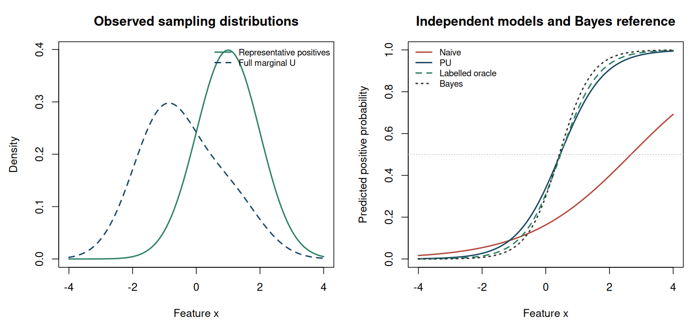

3. Learning from positives and unlabelled observations#
Topics of Statistical Learning · Week 3
What is missing?#
In positive–unlabelled learning, some observations are known to belong to a positive class, while an unlabelled collection contains both classes. Examples include confirmed relevant documents and a broader document collection, or confirmed examples of a phenomenon together with background observations. An unlabelled observation has an unknown class, not a known negative class.
The main task is to express a target classification risk using distributions from which data are actually available. The derivation is short, but its sampling assumptions are consequential. We first use an explicit two-sample model, then distinguish it from a single dataset in which only some positive labels are revealed.
The two-sample model#
Let \(Y\in\{+1,-1\}\), let \(\pi=P(Y=+1)\in(0,1)\) be the target class prior, and write
The target feature marginal is
The introductory sampling scheme provides independent observations \(X^+_1,\ldots,X^+_{n_+}\sim P_+\) and \(X^U_1,\ldots,X^U_{n_U}\sim P_U\). These are representative samples from the specified positive distribution and the full target feature marginal. For now, \(\pi\) is known.
The ratio \(n_+/(n_++n_U)\) is controlled by data collection and is not an estimator of the target prevalence in this two-sample design. We may deliberately collect many confirmed positives while the target population contains relatively few positives.
Deriving the PU risk identity#
For a score \(g\) and loss \(\ell\), define \(\ell_\pm(X)=\ell(g(X),\pm1)\). The ordinary population risk is
The unavailable negative expectation can be removed by applying the mixture relation to \(\ell_-\):
Substituting gives
Each expectation on the right can be estimated from the observed samples. The subtraction removes the positive-class contribution that would otherwise be counted when unlabelled observations are temporarily evaluated as negative.
The identity applies to a loss with finite relevant expectations. It is not restricted to zero–one loss. Its empirical version is
For a fixed \(g\) and the stated known-prior sampling model, this estimator is unbiased. A model fitted by minimizing it still needs generalization analysis or independent evaluation. The fitted model is not fixed with respect to its training sample.
Worked example 3.1 — Removing positive contamination
Suppose \(\pi=0.3\), sensitivity is \(0.8\), and the false-positive rate is \(0.1\). Under zero–one loss,
while \(E_U\ell_-=P\{g(X)=+1\}=0.3(0.8)+0.7(0.1)=0.31\). The PU identity yields
The direct fully labelled calculation is \(0.3(0.2)+0.7(0.1)=0.13\). The observed marginal predicted-positive rate \(0.31\) includes true positives as well as false positives. It is not the negative-class error contribution; subtracting \(0.24\) leaves the required contribution \(0.07\).
A logistic objective that can be implemented directly#
Take \(g_\beta(x)=\beta_0+x^\mathsf T\beta_1\) and logistic losses
Since \(\log(1+e^{-g})-\log(1+e^g)=-g\), the empirical PU risk simplifies to
For this linear score, the objective is convex. A positive quadratic penalty can stabilize estimation and ensure a finite minimizer; the penalty is a chosen regularizer rather than an unbiased component of the target risk. More flexible score classes introduce different computational and statistical issues. Chapter 4 examines the negative empirical risks that can arise from the subtraction.
Implement the softplus function stably as \(\max(z,0)+\log(1+e^{-|z|})\), rather than forming a potentially overflowing \(e^z\).
A different design: labels revealed within one sample#
Now suppose observations are sampled from the target population and \(S=1\) indicates that a positive label is recorded. We assume \(P(S=1\mid Y=-1,X)=0\). Under selected completely at random, or SCAR,
for a constant \(c>0\). Then \(P(S=1\mid X=x)=cP(Y=+1\mid X=x)\), and the labelled positives have distribution \(P_+\). However, the observations with \(S=0\) are not distributed as the full feature marginal.
Worked example 3.2 — Unlabelled rows are not always the marginal sample
Let \(\pi=0.3\) and \(c=0.4\). The probability of an observed positive label is \(0.12\). Among observations without a recorded label,
Using the classifier from Example 3.1, the predicted-positive rate in this subset is \(0.2045(0.8)+0.7955(0.1)\approx0.2432\). If we incorrectly substitute that rate for \(E_U\ell_-\), the PU expression becomes about \(0.0632\), rather than the target risk \(0.13\).
All feature vectors in the original population sample can represent the marginal distribution. The labelled-positive and full-feature averages then share observations, so their dependence matters for variance calculations. Alternatively, use a sampling model and risk expression designed specifically for the observed-label partition.
What the assumptions do not supply#
SCAR makes the recorded positives representative of the positive class. It does not by itself identify an unknown \(c\) or \(\pi\). In the observed posterior \(P(S=1\mid X)=c\eta(X)\), different pairs \((c,\eta)\) can produce the same product without additional restrictions. Likewise, a positive distribution and its mixture with an unrestricted negative distribution need not uniquely determine an unknown mixture proportion.
Known prevalence, a separately collected validation sample, or additional identifiable structure can supply information. Any class-prior estimator introduced later must state its own assumptions. Treating a supplied prior as known is appropriate for an introductory simulation, provided the simulation also examines sensitivity to an incorrect value.
R laboratory — A linear PU classifier#
The lab fits a regularized logistic PU objective to independent positive and marginal samples. It compares the resulting rule with a naive positive-versus-unlabelled fit, a fully labelled oracle benchmark, and the known Bayes score for the simulation. All evaluation uses a new labelled test sample. The final section verifies the SCAR subset calculation using a separate population sample.
Code
# Topics of Statistical Learning
# Lab 03: Logistic PU learning under an explicit two-sample design
# Base R only. Run with: Rscript 03-pu-learning.R
set.seed(2026102103)
prior <- 0.30
n_positive <- 250L
n_unlabelled <- 1500L
n_test <- 50000L
lambda <- 0.01
softplus <- function(z) pmax(z, 0) + log1p(exp(-abs(z)))
design <- function(x) cbind(intercept = 1, x = x)
sample_population <- function(n) {
y <- rbinom(n, 1L, prior)
list(x = rnorm(n, mean = ifelse(y == 1L, 1, -1)), y = y)
}
x_positive <- rnorm(n_positive, mean = 1)
unlabelled <- sample_population(n_unlabelled)
z_positive <- design(x_positive)
z_unlabelled <- design(unlabelled$x)
pu_objective <- function(beta) {
gu <- drop(z_unlabelled %*% beta)
gp <- drop(z_positive %*% beta)
mean(softplus(gu)) - prior * mean(gp) + lambda * sum(beta^2)
}
pu_gradient <- function(beta) {
gu <- drop(z_unlabelled %*% beta)
drop(crossprod(z_unlabelled, plogis(gu))) / n_unlabelled -
prior * colMeans(z_positive) + 2 * lambda * beta
}
pu_fit <- optim(c(0, 0), pu_objective, pu_gradient, method = "BFGS",
control = list(reltol = 1e-10, maxit = 1000L))
fit_labelled <- function(z, y) {
objective <- function(beta) {
g <- drop(z %*% beta)
mean(softplus(g) - y * g) + lambda * sum(beta^2)
}
gradient <- function(beta) {
drop(crossprod(z, plogis(drop(z %*% beta)) - y)) / nrow(z) +
2 * lambda * beta
}
optim(c(0, 0), objective, gradient, method = "BFGS",
control = list(reltol = 1e-10, maxit = 1000L))
}
# Naive benchmark: recorded positives = 1, all marginal U observations = 0.
naive_fit <- fit_labelled(rbind(z_positive, z_unlabelled),
c(rep(1, n_positive), rep(0, n_unlabelled)))
# Oracle benchmark only: uses latent labels that a PU learner cannot observe.
oracle_fit <- fit_labelled(z_unlabelled, unlabelled$y)
beta_bayes <- c(qlogis(prior), 2)
test <- sample_population(n_test)
z_test <- design(test$x)
coefficients <- rbind(naive = naive_fit$par, PU = pu_fit$par,
labelled_oracle = oracle_fit$par, Bayes = beta_bayes)
assessment <- do.call(rbind, lapply(seq_len(nrow(coefficients)), function(j) {
score <- drop(z_test %*% coefficients[j, ])
probability <- plogis(score)
errors <- as.numeric((score > 0) != test$y)
data.frame(method = rownames(coefficients)[j],
intercept = coefficients[j, 1], slope = coefficients[j, 2],
test_error = mean(errors), test_error_MCSE = sd(errors) / sqrt(n_test),
test_log_loss = mean(softplus(score) - test$y * score),
test_Brier = mean((probability - test$y)^2))
}))
cat("Target prior:", prior, "; sample sizes P =", n_positive,
", U =", n_unlabelled, "\n")
cat("Positive fraction in the assembled training data:",
n_positive / (n_positive + n_unlabelled), "(not the target prior)\n\n")
print(assessment, digits = 5, row.names = FALSE)
# Separate single-sample SCAR experiment.
population <- sample_population(50000L)
labelling_probability <- 0.4
s <- population$y == 1L & runif(length(population$y)) < labelling_probability
scar_table <- data.frame(
quantity = c("Observed-label fraction", "Positive fraction among S=0",
"Feature mean in full population", "Feature mean among S=0"),
empirical = c(mean(s), mean(population$y[!s]), mean(population$x),
mean(population$x[!s])),
theoretical = c(prior * labelling_probability,
prior * (1 - labelling_probability) /
(1 - prior * labelling_probability),
2 * prior - 1,
2 * prior * (1 - labelling_probability) /
(1 - prior * labelling_probability) - 1))
cat("\nSeparate SCAR population sample:\n")
print(scar_table, digits = 5, row.names = FALSE)
cat("\nThe S=0 subset is not the full target feature marginal.\n")
figure_dir <- Sys.getenv("COURSE_FIGURE_DIR", unset = "")
if (nzchar(figure_dir)) {
dir.create(figure_dir, recursive = TRUE, showWarnings = FALSE)
png(file.path(figure_dir, "03-pu-learning.png"), width = 1500,
height = 700, res = 140, type = "cairo")
par(mfrow = c(1, 2), mar = c(4.5, 4.5, 3.2, 1.2))
grid <- seq(-4, 4, length.out = 401L)
positive_density <- dnorm(grid, 1)
marginal_density <- prior * positive_density + (1 - prior) * dnorm(grid, -1)
matplot(grid, cbind(positive_density, marginal_density), type = "l", lwd = 2,
lty = c(1, 2), col = c("#2D8063", "#1B4965"), xlab = "Feature x",
ylab = "Density", main = "Observed sampling distributions")
legend("topright", c("Representative positives", "Full marginal U"),
lty = c(1, 2), col = c("#2D8063", "#1B4965"), lwd = 2, bty = "n", cex = 0.8)
probabilities <- plogis(design(grid) %*% t(coefficients))
matplot(grid, probabilities, type = "l", lwd = 2, lty = c(1, 1, 2, 3),
col = c("#B44A3D", "#1B4965", "#2D8063", "#333333"),
xlab = "Feature x", ylab = "Predicted positive probability",
main = "Independent models and Bayes reference")
abline(h = 0.5, lty = 3, col = "#BBBBBB")
legend("topleft", c("Naive", "PU", "Labelled oracle", "Bayes"),
lty = c(1, 1, 2, 3), col = c("#B44A3D", "#1B4965", "#2D8063", "#333333"),
lwd = 2, bty = "n", cex = 0.8)
invisible(dev.off())
}
stopifnot(pu_fit$convergence == 0L, naive_fit$convergence == 0L,
oracle_fit$convergence == 0L, all(is.finite(coefficients)))
Executed laboratory output#
Output
Target prior: 0.3 ; sample sizes P = 250 , U = 1500
Positive fraction in the assembled training data: 0.1428571 (not the target prior)
method intercept slope test_error test_error_MCSE test_log_loss
naive -1.63544 0.61106 0.29092 0.0020312 0.49859
PU -0.66237 1.46182 0.13840 0.0015443 0.33206
labelled_oracle -0.80028 1.71235 0.13836 0.0015441 0.32360
Bayes -0.84730 2.00000 0.13852 0.0015449 0.32073
test_Brier
0.17327
0.10228
0.10066
0.10007
Separate SCAR population sample:
quantity empirical theoretical
Observed-label fraction 0.12218 0.12000
Positive fraction among S=0 0.20510 0.20455
Feature mean in full population -0.39511 -0.40000
Feature mean among S=0 -0.58891 -0.59091
The S=0 subset is not the full target feature marginal.


Exercises#
Derive the PU identity for squared probability loss as well as for zero–one loss. Which step changes?
In the two-sample design, why does increasing \(n_+\) while holding the target population fixed not increase \(\pi\)?
Show the logistic simplification above and derive the gradient for a linear score with design vector \(z(x)=(1,x^\mathsf T)^\mathsf T\).
In a single SCAR sample, derive \(P(Y=+1\mid S=0)\) and state when it equals \(\pi\).
Worked solutions
1. The mixture identity holds for any integrable function, so no algebraic step changes. Substitute the chosen loss for \(\ell_-\) and then for the full risk. The interpretation and optimization properties of the resulting objective do change with the loss.
2. The investigator controls the numbers sampled from \(P_+\) and \(P_U\). The target prevalence belongs to the population represented by \(P_U\), not to the artificially assembled training collection.
3. The difference of the two logistic losses is \(-g\). With quadratic penalty \(\lambda\|\beta\|^2\), the gradient is \(n_U^{-1}\sum_j\operatorname{logit}^{-1}(z_j^\mathsf T\beta)z_j-\pi n_+^{-1}\sum_i z_i+2\lambda\beta\).
4. Bayes’ rule gives \(\pi(1-c)/(1-\pi c)\). For \(0<\pi<1\), equality with \(\pi\) requires \(c=0\), in which case no labels are observed. The degenerate all-negative or all-positive populations also require separate treatment. For a useful nondegenerate SCAR sample with \(c>0\), the unlabelled subset has a smaller positive proportion.
Primary readings#
Elkan and Noto (2008), “Learning Classifiers from Only Positive and Unlabeled Data”: the observed-label mechanism and SCAR relationship.
du Plessis, Niu, and Sugiyama (2015), “Convex Formulation for Learning from Positive and Unlabeled Data”: risk rewriting and convex formulations.
Kiryo et al. (2017), “Positive-Unlabeled Learning with Non-Negative Risk Estimator”: the empirical-risk formulation and its practical limitations.